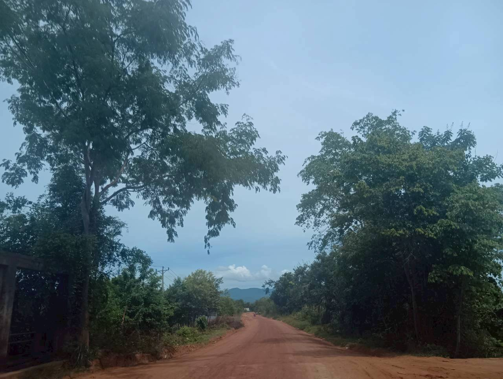
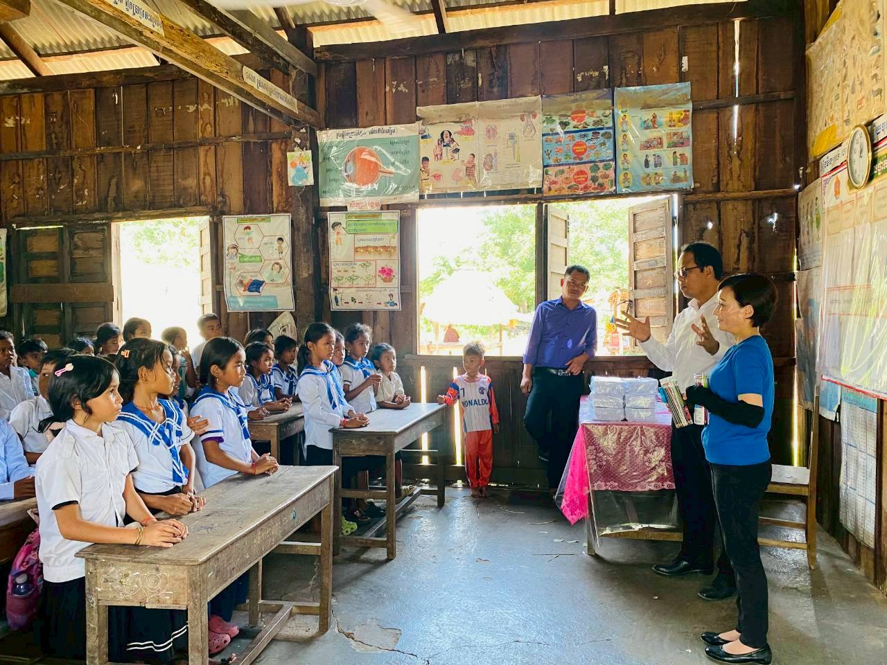
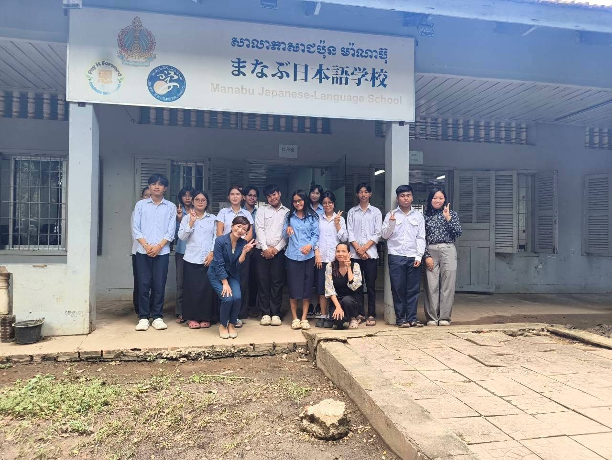

CAMBODIA
カンボジアについて
私たちの事業の原点には、いつもカンボジアがあります。豊かな歴史や文化、今まさに変化を続ける社会、そして日本で暮らすカンボジアの人々とのつながり。両国の現状を知り、人と人との関係を築いていくことが、Cheer you up の活動の出発点です。

01 — HISTORY
カンボジアの歴史と歩み
カンボジアは、世界遺産アンコールワットに象徴される、豊かな歴史と独自の文化を持つ国です。一方、1970年代後半にはクメール・ルージュ政権下で多くの人々が命を落とし、教育や医療をはじめ、社会を支えるさまざまな基盤が大きな打撃を受けました。
1990年代以降、国際社会との協力のもと復興と発展を進め、近年はプノンペンを中心に都市化や経済成長が加速しています。現在も地域間の経済格差や教育・雇用機会の確保など、取り組むべき課題はありますが、若い世代を中心に新しい可能性が広がっています。

02 — PRESENT
カンボジアの今とこれから
都市部では商業施設やインフラの整備が進み、経済や産業が発展を続けています。その一方で、地方の農村部では教育環境や就労機会に地域差があり、子どもたちの学びや女性の社会進出など、さらなる環境整備が求められています。
より安定した仕事や新しい機会を求め、都市部や海外で働くことを選ぶ人もいます。私たちは、カンボジアを一方的に支援する対象としてではなく、豊かな文化と大きな可能性を持つパートナーとして捉えています。それぞれの強みを生かし、互いに学び、成長できる関係を築いていきたいと考えています。

03 — LIVING IN JAPAN
日本で暮らすカンボジアの人々
日本で暮らすカンボジア出身の人々は年々増加しており、技能実習や特定技能などの在留資格を通じて、さまざまな産業や地域で活躍しています。仕事や学びを通じて日本社会を支える、大切な存在です。
一方で、慣れない言語や文化、生活習慣の違いなどから、日常生活や仕事の中で戸惑いや困難を感じることもあります。
- 日本語でのコミュニケーションに不安があり、職場や地域での交流が難しい
- 行政手続きや契約など、複雑な制度や仕組みを理解する機会が限られている
- 日本独自の生活習慣や職場のルールに慣れるまで時間がかかる
- 家族や友人と離れて暮らす中で、孤独や不安を感じることがある
- 生活や仕事で困ったときに、気軽に相談できる相手や窓口が見つからない
こうした課題は、本人の努力だけで解決できるものではありません。言葉や文化の違いを理解し、互いに歩み寄れる環境をつくることが大切です。私たちは、一人ひとりが安心して自分らしく暮らし、能力を発揮できる社会を目指しています。